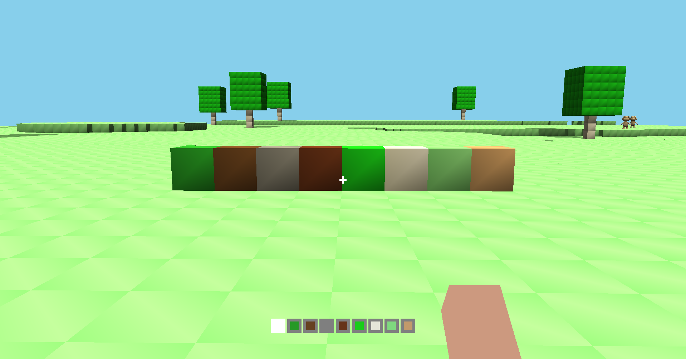
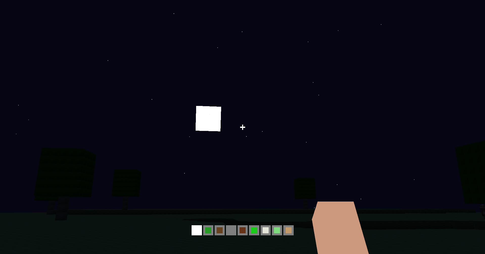

OpenGL Voxel Terrain Engine
A procedurally generated voxel terrain engine built in C++ using OpenGL 4.3, featuring real-time lighting, shadow mapping, dynamic day/night cycles, and interactive gameplay systems.
Overview
This project is a first-person voxel exploration system inspired by sandbox-style environments, built from the ground up using OpenGL and C++. The focus of the project was to combine gameplay systems with low-level graphics programming, including procedural terrain generation, real-time lighting, and scalable world management through chunk-based streaming. This project was selected as showcase work for university open days, demonstrating its technical depth and visual quality to prospective students.
Key Features
- Procedural voxel terrain generation with multiple biomes
- Chunk-based world streaming system for infinite terrain
- Real-time lighting with shadow mapping (PCF filtering)
- Dynamic day/night cycle with moving light sources
- First-person movement system with physics and collision
- Block interaction using raycasting
- AI entities with basic pathfinding behaviour
- Interactive GUI for real-time parameter adjustment



Technical Breakdown
Gameplay Systems
Implemented core gameplay systems including player movement, physics, and interaction within a voxel-based world. Movement includes sprinting, crouching, jumping, and collision detection, with gravity applied each frame. Interaction is handled through a raycasting system, allowing players to destroy blocks within a defined range.
Procedural Terrain Generation
Developed a procedural terrain system using multi-octave noise functions to generate natural height variation. Terrain is generated per chunk, with biome regions determined from world coordinates. Each biome applies different terrain characteristics, allowing variation across the generated world.
Chunk Streaming System
Implemented a chunk-based world system to support infinite terrain generation. Chunks are dynamically loaded and unloaded based on player position using a render distance check. This ensures only nearby terrain is kept in memory, improving performance and scalability.
Rendering & Lighting
Built a custom OpenGL rendering pipeline supporting real-time lighting and shadow mapping. A two-pass rendering approach is used, with the first pass generating a depth map from the light’s perspective and the second pass applying lighting and shadows using PCF filtering.
Day/Night Cycle
Implemented a continuous day/night cycle driven by time progression. Light direction and intensity are calculated using trigonometric functions, allowing smooth transitions between daylight and nighttime lighting conditions.
AI & Interaction Systems
Developed basic AI entities including roaming NPCs and a companion system. Entities can be spawned dynamically and interact with the world, demonstrating integration between gameplay systems and world simulation.
Architecture & Design
Structured the project using object-oriented design and common programming patterns, including:
- Component-based separation of systems
- Factory pattern for terrain generation
- Object pooling for chunk management
- Observer pattern for input handling
This allowed systems such as rendering, terrain generation, and gameplay logic to remain modular and maintainable.
Challenges
One of the main challenges was managing complexity within the rendering pipeline, particularly debugging framebuffer and shadow mapping issues. Another challenge was ensuring smooth terrain generation across chunk boundaries, as inconsistencies in procedural noise led to visible seams and height variation issues. Collision detection also presented difficulties, especially in edge cases such as movement in confined voxel spaces.
What I Learned
This project significantly improved my understanding of:
- Real-time rendering pipelines in OpenGL
- Procedural generation techniques
- Designing scalable gameplay systems
- Debugging complex graphical and system-level issues
It also strengthened my ability to structure larger projects using maintainable architecture and reusable components.